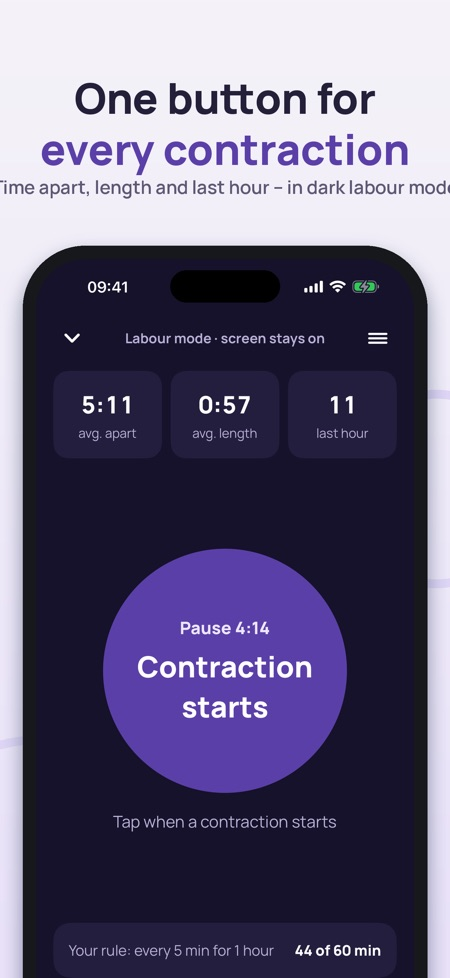
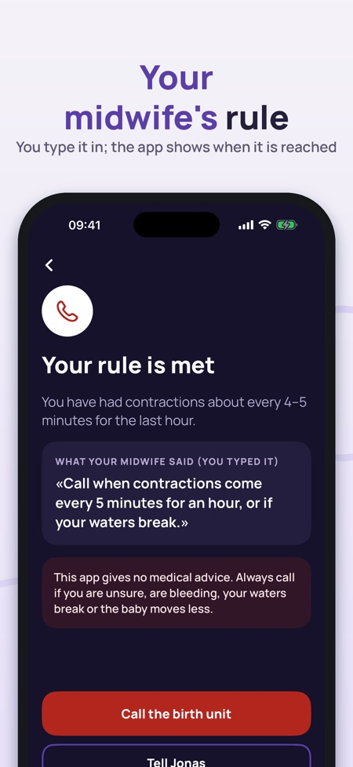
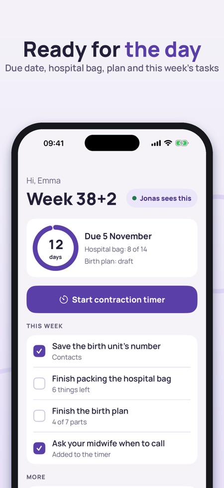

Birth plan & hospital bag. One big button for contractions, your midwife's own rule, the hospital bag and birth plan – and your partner sees the same via iCloud. A log, not medical advice.



Fødselsklar brings together what you need on the day: a contraction timer with one big button, the hospital bag, your birth plan and the numbers to call – and your partner can see the same. In Norwegian, Danish, Finnish and English, for Norway, Denmark and Finland.
CONTRACTION TIMER (LABOUR MODE)
• One big button: tap when a contraction starts and when it ends
• Average time apart, average length and contractions in the last hour
• Dark screen that stays on, big numbers and a vibration on every tap
• Keeps the right times when the phone locks, the app is closed or the screen turns off
• Lock screen and Dynamic Island show the contraction or the pause, with a button for the next one
• History as a chart and a table – share it as text with your midwife or partner
YOUR MIDWIFE'S RULE
Type what your midwife or birth unit told you, e.g. "call when contractions come every 5 minutes for an hour". The app shows how far along you are and highlights when your own numbers are reached, together with a big button to call the birth unit. The app suggests no numbers of its own and does not decide when you should go.
HOSPITAL BAG
• Ready-made list for your country, with the pregnancy record and ID at the top
• Three tabs: me, baby and partner – add and remove items
• Your partner can tick items from their own phone
BIRTH PLAN
• Seven parts: pain relief, who is with me, positions, right after the birth, umbilical cord, feeding, photos and atmosphere
• Pick wishes with one tap and add your own notes
• Make a PDF in your language to print or show
PARTNER
Share through iCloud, no account. Your partner sees the contraction status, the bag, the plan and the contacts, with "updated … ago" so nothing looks fresher than it is. You choose what is shared. The message "Contractions have started – please come home" is only sent when you tap.
CONTACTS
Big buttons for the birth unit, midwife, partner and taxi. You type the numbers yourself. The emergency number is always at the bottom.
BABY'S MOVEMENTS
A simple diary without "normal" values. The advice to contact your birth unit if the baby moves less is always at the top.
THE FIRST WEEKS
Official steps after the birth in Norway, Denmark or Finland, each with a link to the source: home visits, registering the name, parental and child benefits, passport.
PRICE
The contraction timer, history, hospital bag and contacts work without a purchase – on the day too. Partner sharing, the birth-plan PDF, the movement diary, the first weeks and history export unlock with a one-time purchase. No subscription.
IMPORTANT
Fødselsklar keeps a log and helps you remember. It gives no medical advice and makes no diagnosis. Follow the advice of your midwife and birth unit, and call them if you are unsure. Texts link to their sources: helsenorge.no, sundhed.dk and terveyskylä.fi.
Privacy: what you enter stays on your phone and, if you share, in your own iCloud. Anonymous usage statistics (which screens are used, never health information) can be switched off in Settings.